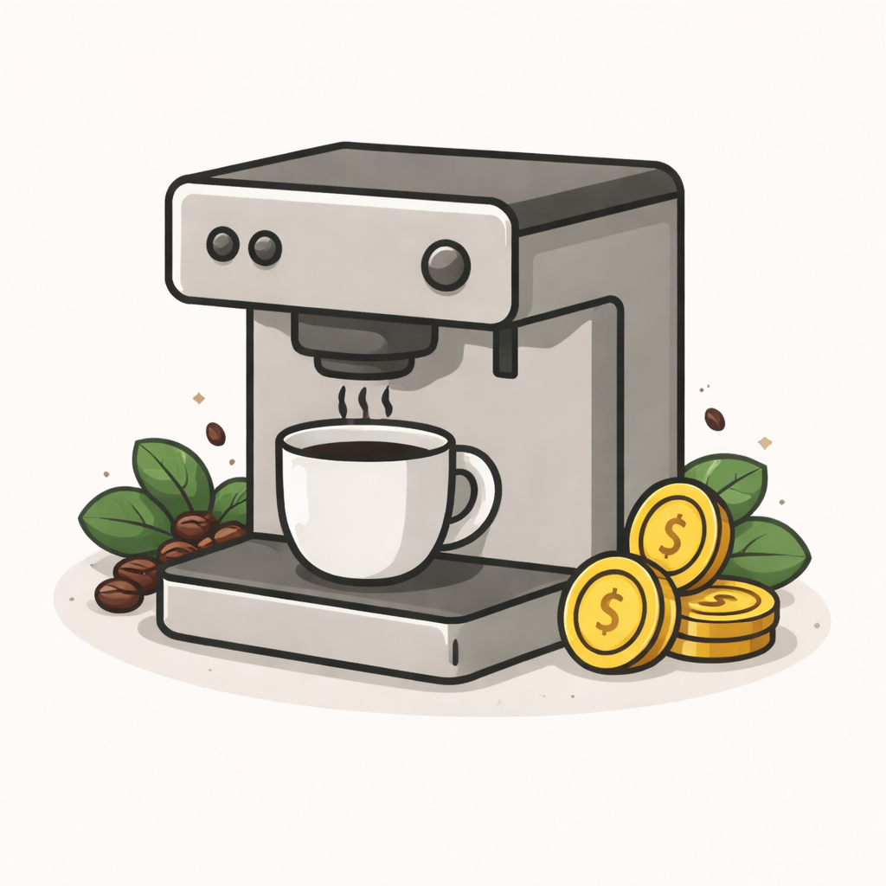
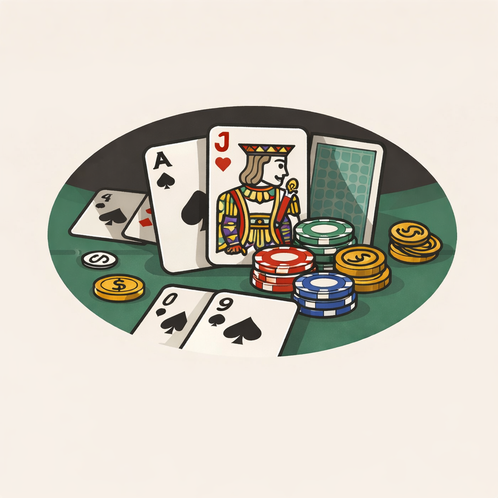

Coffee Machine
Simulación de una máquina de café en Python con menú, recursos y manejo de dinero.

Enfocado en construir proyectos y resolver problemas con código
ContáctameSoy Johel Gómez, estudiante de desarrollo de software 💻 enfocado en aprender, construir y mejorar constantemente. Actualmente estoy desarrollando proyectos para fortalecer mis habilidades en programación, lógica y desarrollo web. Me interesa entender cómo funcionan las cosas, resolver problemas y crear soluciones claras y funcionales a través del código. Fuera del mundo de la programación, disfruto el deporte 🏋️♂️, el crecimiento personal 📈 y los retos que implican disciplina y constancia. También me gusta pasar tiempo en la naturaleza 🌿, explorar nuevas ideas y escuchar música electrónica 🎧. Este portafolio reúne algunos de los proyectos y aprendizajes que forman parte de mi proceso como desarrollador.
 HTML
HTML
 CSS
CSS
 JavaScript
JavaScript
 Python
Python
 MySQL
MySQL

Simulación de una máquina de café en Python con menú, recursos y manejo de dinero.

Juego de BlackJack en consola: cartas, puntajes y lógica de la computadora.
Juego de adivinar quién tiene más seguidores con rondas y score.
Podés escribirme por aquí: